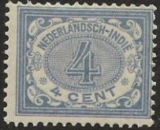
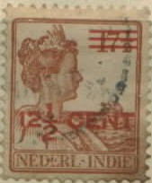
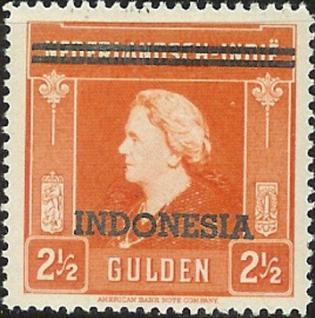
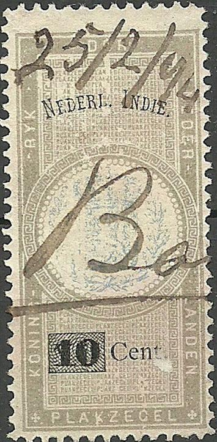
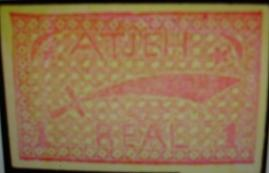

Return To Catalogue - 1864-1900 issues - Netherlands - Postage due stamps (Te betalen port) - Indonesia - Cancels of Netherlands Indies
Note: on my website many of the
pictures can not be seen! They are of course present in the
catalogue;
contact me if you want to purchase the catalogue.
For issues of 1864 to 1900 click here.
With coloured background

1/2 c violet 1 c olive 2 c brown 2 1/2 c green 3 c orange 4 c blue (1909) 5 c red 7 1/2 c violet (1908)
These stamps have perforation 12 1/2.
Value of the stamps |
|||
vc = very common c = common * = not so common ** = uncommon |
*** = very uncommon R = rare RR = very rare RRR = extremely rare |
||
| Value | Unused | Used | Remarks |
| 1/2 c | c | vc | |
| 1 c | c | vc | |
| 2 c | c | vc | |
| 2 1/2 c | c | vc | |
| 3 c | c | c | |
| 4 c | c | c | |
| 5 c | c | vc | |
| 7 1/2 c | c | c | |
With white background (1912)
(reduced size)
1/2 c violet 1 c olive 2 c brown 2 1/2 c green 2 1/2 c red 3 c yellow 4 c blue 4 c green 5 c red 5 c green 5 c blue 7 1/2 c brown 10 c lilac
These stamps have perforation 12 1/2. The values 1 c, 2 c, 2 1/2 c red, 3 c, 4 c blue, 5 c green, 7 1/2 c and 10 c exist with overprint "3de N.I. JAARBEURS BANDOENG 1922" in various colours for an exhibition in the town of Bandoeng.
Value of the stamps |
|||
vc = very common c = common * = not so common ** = uncommon |
*** = very uncommon R = rare RR = very rare RRR = extremely rare |
||
| Value | Unused | Used | Remarks |
| 1/2 c | c | vc | |
| 1 c | vc | vc | |
| 2 c | vc | vc | |
| 2 1/2 c green | c | vc | 1913 |
| 2 1/2 c red | c | vc | 1922? |
| 3 c | c | c | |
| 4 c blue | c | c | |
| 4 c green | c | c | 1927 |
| 5 c red | c | vc | |
| 5 c green | c | vc | |
| 5 c blue | c | c | 1927 |
| 7 1/2 c | c | c | |
| 10 c | c | vc | 1922? |
Red Cross issue, red surcharge (1915)
'+5c' on 1 c olive '+5c' on 5 c red
Value of the stamps |
|||
vc = very common c = common * = not so common ** = uncommon |
*** = very uncommon R = rare RR = very rare RRR = extremely rare |
||
| Value | Unused | Used | Remarks |
| 5 c on 1 c | * | * | |
| 5 c on 5 c | * | * | |
Surcharged (white background)

'1/2' on 2 1/2 c green '1' on 4 c blue
Value of the stamps |
|||
vc = very common c = common * = not so common ** = uncommon |
*** = very uncommon R = rare RR = very rare RRR = extremely rare |
||
| Value | Unused | Used | Remarks |
| 1/2 c on 2 1/2 c | c | c | 1917 |
| 1 c on 4 c | c | c | 1917 |
Overprinted "DIENST" (Official stamps, 1911)

1/2 c lilac 1 c green 2 c brown 2 1/2 c green 3 c orange 4 c blue 5 c red 7 1/2 c violet
Value of the stamps |
|||
vc = very common c = common * = not so common ** = uncommon |
*** = very uncommon R = rare RR = very rare RRR = extremely rare |
||
| Value | Unused | Used | Remarks |
| 1/2 c | c | c | |
| 1 c | c | c | |
| 2 c | c | c | |
| 2 1/2 c | * | * | |
| 3 c | c | c | |
| 4 c | c | vc | |
| 5 c | c | c | |
| 7 1/2 c | c | * | |
I have seen a postcard 'Briefkaart' in the same design (coloured background) in the value 5 c red. I've also seen a 5 c red postcard with the white background (also exists overprinted with a red cross and '+5 cts.').
10 c grey 12 1/2 c blue 15 c brown (with two horizontal bars) 15 c brown (without bars) 17 1/2 c yellow (1908) 20 c olive 22 1/2 c brown and green (1908) 25 c violet 30 c brown 50 c red
These stamps have perforation 12 1/2.
Value of the stamps |
|||
vc = very common c = common * = not so common ** = uncommon |
*** = very uncommon R = rare RR = very rare RRR = extremely rare |
||
| Value | Unused | Used | Remarks |
| 10 c | c | vc | |
| 12 1/2 c | c | vc | |
| 15 c | * | c | With lines |
| 15 c | * | c | Without lines |
| 17 1/2 c | * | c | |
| 20 c | * | * | Two shades of green were issued |
| 22 1/2 c | * | c | |
| 25 c | * | vc | |
| 30 c | * | c | |
| 50 c | * | c | |
Larger size
1 G lilac 2 1/2 G green
These stamps have perforation 11 1/2 or 11 1/2 x 11. Similar stamps were issued for Curacao (Netherlands Antilles) and Surinam.
Value of the stamps |
|||
vc = very common c = common * = not so common ** = uncommon |
*** = very uncommon R = rare RR = very rare RRR = extremely rare |
||
| Value | Unused | Used | Remarks |
| 1 G | ** | c | This stamp also exists on bluish paper (1912): *** |
| 2 1/2 G | *** | * | This stamp also exists on bluish paper (1912): R |
Surcharged


'10 cent' on 20 c olive (1905) '17 1/2' on 22 1/2 c brown and green (1917) '30 CENT' on 1 G lilac (1918)
Value of the stamps |
|||
vc = very common c = common * = not so common ** = uncommon |
*** = very uncommon R = rare RR = very rare RRR = extremely rare |
||
| Value | Unused | Used | Remarks |
| 10 c on 20 c | c | c | |
| 17 1/2 c on 22 1/2 c | c | c | |
| 30 c on 1 G | * | c | |
Overprinted "DIENST" (Official stamps)

10 c grey 12 1/2 c blue 15 c brown 15 c brown (with bars) 17 1/2 c yellow 20 c green 22 1/2 c brown and green 25 c violet 30 c brown 50 c brown 1 G lilac (larger size) 2 1/2 G blue (larger size)
Value of the stamps |
|||
vc = very common c = common * = not so common ** = uncommon |
*** = very uncommon R = rare RR = very rare RRR = extremely rare |
||
| Value | Unused | Used | Remarks |
| 10 c | c | c | |
| 12 1/2 c | * | * | |
| 15 c | c | * | With bars |
| 15 c | ** | *** | Without bars |
| 17 1/2 c | * | * | |
| 20 c | * | c | |
| 22 1/2 c | * | * | |
| 25 c | * | * | |
| 30 c | * | * | |
| 50 c | ** | ** | |
| 1 G | ** | * | |
| 2 1/2 G | *** | *** | |
Numeral

1/2 c violet 1 c olive 2 c brown 2 1/2 c green 3 c orange 5 c red 7 1/2 c violet
Value of the stamps |
|||
vc = very common c = common * = not so common ** = uncommon |
*** = very uncommon R = rare RR = very rare RRR = extremely rare |
||
| Value | Unused | Used | Remarks |
| 1/2 c | c | c | |
| 1 c | c | c | |
| 2 c | c | c | |
| 2 1/2 c | c | c | |
| 3 c | c | c | |
| 5 c | c | c | |
| 7 1/2 c | c | c | |
Queen Wilhelmina
10 c grey 12 1/2 c blue 15 c brown 17 1/2 c yellow 20 c olive 22 1/2 c brown and green 25 c violet 30 c brown 50 c red 1 G lilac (larger size) 2 1/2 G blue (larger size)
Inverted overprints exist.
Value of the stamps |
|||
vc = very common c = common * = not so common ** = uncommon |
*** = very uncommon R = rare RR = very rare RRR = extremely rare |
||
| Value | Unused | Used | Remarks |
| 10 c | c | c | |
| 12 1/2 c | * | c | |
| 15 c | * | c | With bars |
| 17 1/2 c | * | c | |
| 20 c | * | c | |
| 22 1/2 c | * | * | |
| 25 c | * | c | |
| 30 c | * | c | |
| 50 c | * | c | |
| 1 G | ** | * | |
| 2 G 50 c | *** | *** | |
Two forged 'JAVA' overprints

Numeral 1/2 c violet 1 c olive 2 c brown 2 1/2 c green 3 c orange 5 c red 7 1/2 c violet
Value of the stamps |
|||
vc = very common c = common * = not so common ** = uncommon |
*** = very uncommon R = rare RR = very rare RRR = extremely rare |
||
| Value | Unused | Used | Remarks |
| 1/2 c | c | c | |
| 1 c | c | c | |
| 2 c | c | c | |
| 2 1/2 c | c | c | |
| 3 c | c | c | |
| 5 c | c | c | |
| 7 1/2 c | c | * | |
Queen Wilhemina
10 c grey 12 1/2 c blue 15 c brown 17 1/2 c yellow 20 c olive 22 1/2 c brown and green 25 c violet 30 c brown 50 c red 1 G lilac (larger size) 2 1/2 G blue (larger size)
Value of the stamps |
|||
vc = very common c = common * = not so common ** = uncommon |
*** = very uncommon R = rare RR = very rare RRR = extremely rare |
||
| Value | Unused | Used | Remarks |
| 10 c | c | c | |
| 12 1/2 c | * | c | |
| 15 c | * | * | With bars |
| 17 1/2 c | * | * | |
| 20 c | * | * | |
| 22 1/2 c | * | * | |
| 25 c | * | c | |
| 30 c | * | c | |
| 50 c | * | c | |
| 1 G | ** | * | |
| 2 G 50 c | *** | *** | |
Dangerous 'BUITEN BEZIT' forgeries were made by Pierre Vos, especially of the values 22 1/2 c and the 1 G and 2G50c. The 'guarantee-mark' 'Ned.Bd' on the back of the stamps was also forged. Source: www.zwp-lbstudie.nl/.../1908-Java-Buiten-Bezit-opdrukken-svl-em.pdf.

10 c red 12 1/2 c blue 12 1/2 c red 17 1/2 c brown 20 c green 20 c blue 22 1/2 c orange 25 c lilac 30 c blue 32 1/2 c violet and orange 40 c green
These stamps have perforation 12 1/2. Similar stamps were issued for Curacao (Netherlands Antilles) and Surinam.
Value of the stamps |
|||
vc = very common c = common * = not so common ** = uncommon |
*** = very uncommon R = rare RR = very rare RRR = extremely rare |
||
| Value | Unused | Used | Remarks |
| 10 c | * | vc | |
| 12 1/2 c blue | * | vc | |
| 12 1/2 c red | c | vc | 1925 |
| 17 1/2 c | * | c | |
| 20 c green | * | c | |
| 20 c blue | * | vc | 1922 |
| 22 1/2 c | * | c | |
| 25 c | * | vc | |
| 30 c | * | vc | |
| 32 1/2 c | * | c | 1922 |
| 40 c | * | c | 1922 |
Red Cross issue, red surcharge
'+5c' on 10 c red
Value of the stamps |
|||
vc = very common c = common * = not so common ** = uncommon |
*** = very uncommon R = rare RR = very rare RRR = extremely rare |
||
| Value | Unused | Used | Remarks |
| +5 c on 10 c | * | * | 1915 |
Surcharged

'10' (orange) on 30 c violet (1937) '10' on 32 1/2 c violet and orange (1937) '12 1/2 CENT' (red) on 17 1/2 c brown (1921) '12 1/2 =' (red) on 20 c blue (1931) '12 1/2 CENT' (red) on 22 1/2 c orange (1921) '20 CENT' (blue) on 22 1/2 c orange (1921)
Value of the stamps |
|||
vc = very common c = common * = not so common ** = uncommon |
*** = very uncommon R = rare RR = very rare RRR = extremely rare |
||
| Value | Unused | Used | Remarks |
| 12 1/2 c on 17 1/2 c | c | c | |
| 12 1/2 c on 20 c | c | c | |
| 12 1/2 c on 22 1/2 c | c | c | |
| 30 c on 22 1/2 c | * | vc | |
Overprinted "LUCHTPOST" (airmail), image of an aeroplane and surcharged '10' on 12 1/2 c red (1928) '20' on 25 c lilac (1928)
The values 12 1/2 c on 22 1/2 c, 17 1/2 c and 20 c blue exist with overprint "3de N.I. JAARBEURS BANDOENG 1922" for an exhibition in the town of Bandoeng (Bandung). The overprint is vertically and in blue colour on the 12 1/2 c on 22 1/2 c, on the other values it is horizontally:
A postal forgery of the 12 1/2 c red is listed in the book by P.v.d. Loo on forgeries used in Cheribon.
50 c green 60 c blue 80 c red 1 G brown 2 1/2 G red
Similar stamps were issued for Curacao (Netherlands Antilles) and Surinam.
Value of the stamps |
|||
vc = very common c = common * = not so common ** = uncommon |
*** = very uncommon R = rare RR = very rare RRR = extremely rare |
||
| Value | Unused | Used | Remarks |
| 50 c | * | c | |
| 60 c | * | c | 1923 |
| 80 c | * | c | 1923 |
| 1 G | * | c | |
| 2 1/2 G | ** | c | |
Surcharged
'32 1/2 CENT' (blue) on 50 c green (1921) '40 CENT' (red) on 50 c green (1921) '60 CENT' (blue) on 1 G brown '80 CENT' (red) on 1 G brown
Value of the stamps |
|||
vc = very common c = common * = not so common ** = uncommon |
*** = very uncommon R = rare RR = very rare RRR = extremely rare |
||
| Value | Unused | Used | Remarks |
| 32 1/2 c on 50 c | * | c | Two types: lines different spacing |
| 40 c on 50 c | * | c | |
| 60 c on 1 G | * | c | |
| 80 c on 1 G | ** | c | |
Overprinted "LUCHTPOST" (airmail), image of an aeroplane and surcharged '40' on 80 c red (1928) '75 ct' (overprint and surcharged in blue) on 1 G brown (1928) '1 1/2' on 2 1/2 G red (1928)
2 1/2 G value
5 c green 10 c red 20 c blue 50 c orange 1 G lilac 2 1/2 G grey 5 G brown
10 c lilac 20 c brown 40 c red 75 c green 150 c orange Surcharged '30' and bars (green) on 40 c red (1930) '30' and bars (black) on 40 c red (1932) '50' in aeroplane (blue) on 150 c orange (1932) Postage stamps, bars through 'LUCHTPOST' and surcharged (1934) '2 CENT' on 10 c lilac '2 CENT' on 20 c brown '42 1/2 CENT' on 75 c green '42 1/2 CENT' on 150 c orange
2 c (+ 1 c) lilac and brown 5 c (+ 2 1/2 c) green and brown 12 1/2 c (+ 2 1/2 c) red and brown 15 c (+ 5 c) blue and brown
1 G blue and brown
30 c lilac 4 1/2 G blue 7 1/2 G green Postage stamps, bars through 'LUCHTPOST' and surcharged (1934) '2 CENT' on 30 c lilac
2 c (+ 1 c) brown 5 c (+ 2 1/2 c) green 12 1/2 c (+ 2 1/2 c) red 15 c (+ 5 c) blue
2 c (+ 1 c) lilac and brown 5 c (+ 2 1/2 c) green and brown 12 1/2 c (+ 2 1/2 c) red and brown 15 c (+ 5 c) blue and brown
10 c red (1934)
12 1/2 c orange
15 c blue (1934)
20 c lilac (1934)
25 c green (1934)
30 c grey (1934)
32 1/2 c light brown (1934)
35 c violet (1934)
40 c green (1934)
42 1/2 c yellow (1934)
Larger size (1934)
50 c violet
60 c blue
80 c red
1 G violet
1.75 G green
2 G green (1938?)
2.50 G lilac
5 G brown (1938?)
Surcharged
'45 =' (red) on 60 c blue (1947)
Overprinted with cross and surcharged (1941)
'10 + 5 ct' on 12 1/2 c orange
Overprinted "PELITA" and surcharged (1948)
'15 + 10 ct.' on 10 c red
Overprinted "1947" (1947)
12 1/2 c orange
25 c green ("1947" in red)
50 c violet ("1947" in red)
80 c red
Overprints issued during the Japanese occupation, reduced sizes

12 1/2 c orange
30 c green
2 c (+ 1 c) lilac and brown 5 c (+ 2 1/2 c) green and brown 12 1/2 c (+ 2 1/2 c) orange and brown 15 c (+ 5 c) blue and brown
1 c violet 2 c lilac 2 1/2 c brown 3 c green 3 1/2 c grey (19??) 4 c olive 5 c blue 7 1/2 c lilac 10 c orange
With local overprints during the Japanese occupation.
12 1/2 c (+ 2 1/2 c) grey
2 c (+ 1 c) lilac and brown 5 c (+ 2 1/2 c) green and brown 12 1/2 c (+ 2 1/2 c) orange and brown 15 c (+ 5 c) blue and brown
2 c (+ 1 c) lilac Larger size 5 c (+ 2 1/2 c) blue 7 1/2 c (+2 1/2 c) lilac 12 1/2 c (+ 2 1/2 c) orange 15 c (+ 5 c) blue
7 1/2 c (+ 2 1/2 c) brown 12 1/2 c (+ 2 1/2 c) red
2 c brown and orange 3 1/2 c grey 7 1/2 c green and orange 10 c red and orange 20 c blue
2 c grey 10 c red 15 c blue 20 c orange
Similar stamps were issued for The Netherlands and Surinam.
17 1/2 c brown (plane facing the right) 20 c grey (plane facing the left)
2 c violet Larger size 3 1/2 c green 7 1/2 c red 10 c orange 20 c blue
2 c violet 3 1/2 c green 7 1/2 c brown 10 c red 10 c red (colours inverted) 20 c blue
The two types of the 10 c exist printed side by side.
10 c red 15 c blue 17 1/2 c orange 20 c violet 25 c green 30 c olive 35 c violet 40 c green Larger size 50 c brown 60 c blue 80 c red 1 G violet 2 G green 5 G yellow-brown 10 G green Even larger size
25 G orange Overprinted '1947' vertically 40 c green 2 G green 5 G yellow-brown Overprinted "TE BETALEN PORT" (postage due stamps, 1946)
2 1/2 c on 10 c red 10 c red 20 c violet
With local overprint during the Japanes occupation
5 c orange and blue 10 c red and blue 1 G grey and blue
2 c green 3 1/2 c brown 7 1/2 c violet 10 c red 15 c blue
2 c red 2 1/2 c lilac 3 c green 3 c red (design as 2 c, 1948) 4 c brown 4 c green (design as 3 c green, 1948) 5 c blue 7 1/2 c violet 7 1/2 c brown (1948)
Overprinted during the Japanese occupation
3 c green, overprinted 'REPOEBLIK INDONESIA' (issued for
Indonesia)
1 c green (fields) 2 c red (harbour) 2 1/2 c lilac (house) 5 c blue (beach with palm trees) 7 1/2 c black (aeroplane above mountains) Queen Wilhelmina 10 c lilac 15 c blue 17 1/2 c red 20 c lilac 30 c grey Queen Wilhelmina, larger size 60 c black 1 G blue 2 1/2 G orange

With 'INDONESIA' overprint for Indonesia
1 c green (bridge) 2 c brown (village near sea) 2 1/2 c red (house and palm tree) 5 c dark blue (village and mountain) 7 1/2 c blue (monuments and mountain) Surcharged (1947) '3' on 2 1/2 c red '3' on 7 1/2 c blue '4' on 1 c green
15 c orange 20 c blue 25 c green 40 c green 45 c lilac 50 c lilac 80 c red 1 G violet (larger size) 10 G green (larger size) 25 G orange (larger size) With additional inscription '1898 1948' 15 c orange 20 c green

With "INDONESIA" overprint for Indonesia
15 c red 20 c blue
In 1921 some Marine Insurance Stamps were issued (7 values, value unused ** to *** , used *** to R).
Postal Stationery:
(King William III in an oval)
The above envelope of 10 c with King William III in an oval was issued in 1886, together with two other values: 12 1/2 c grey and 15 c brown.
(Inscription "POSTDIENST NEDERL - INDIE" Queen
Wilhelmina)
(Inscription "NED.INDIE 10 ct" and arms, I don't know
when it was issue)
Stamps with inscription "PLAKZEGEL VAN NEDERLANDSCH-INDIE" or "PLAKZEGEL VAN NED.-INDIE" are fiscal stamps. They were issued from 1886 onwards.

5 c (issued in 1886) and 10 c on 5 c (issued in 1893) were the
only stamps issued in this design.

1894 design; in this design were issued 10 c green and black and
in red and black the following values: 15 c, 25 c, 50 c, 75 c, 1
G, 1G50, 2G50, 5 G and 10 G. A further value of 1 G in orange and
black was issued in 1908 according to the Forbin guide.


1904 design. Also a 5 c on 10 c overprint.

Issued during the Japanese occupation "PLAKZEGEL
NED.-INDIE" overprinted with a red "DAI NIPPON",
arms of the Netherlands overprinted with those of Japan.

"LOONZEGEL" (employment tax)
Fiscal stamp "NEDERLANDSCH-INDIE GOEDERENGELD"

Half of a fiscal stamp ("HANDELSZEGEL"?).

Bogus envelope, inscription "IND. LANDBOUW CONGRES
SOERABAYA", it exists in many colors.
Bogus "15 cents" on 25 c postcard made by Moquette
Probably a bogus issue from Atjeh of 1882. 1 Real red with inscription "ATJEH", a sword in the center and moon and star in the upper corners. This stamp was reported by Le Timbre Poste of 1882 (by Moens) No 237, page 82. In the same journal No 245, page 33, it was announced as a forgery. It might be a J.P. Moquette product....

An image with description also appears in 'The Philatelic Record' of 1882, page 141, where it is already described as doubtful.
{kind=link}
{kind=link}
{kind=link}
{kind=link}